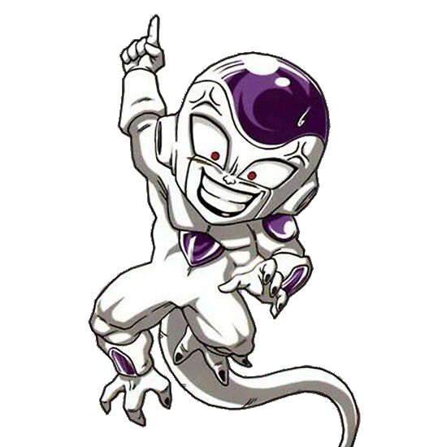
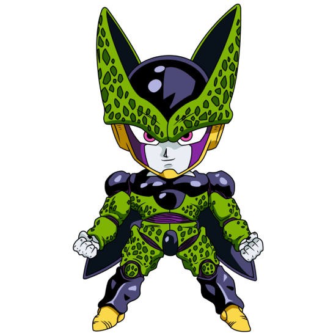

Goku descubre sus orígenes como Saiyajin cuando su hermano Raditz llega
a la Tierra. Tras su muerte y entrenamiento en el Más Allá, Goku regresa para enfrentarse a los
poderosos guerreros Saiyajin Nappa y Vegeta, quienes buscan las Esferas del
Dragón.
Opening:
Saga de Freezer

En el planeta Namek, Goku y los Guerreros Z se enfrentan al tirano galáctico Freezer, quien busca las
Esferas del Dragón de Namek para obtener la inmortalidad. Esta saga
culmina con la legendaria transformación de Goku en Super Saiyajin.
Saga de Cell

Un androide bioorgánico del futuro llamado Cell llega al presente para absorber a los androides 17 y
18 y alcanzar su forma perfecta. Goku y Gohan entrenan en la Habitación del Tiempo para enfrentar
esta amenaza. La saga culmina con Gohan alcanzando el nivel de Super Saiyajin
2.
Saga de Majin Buu
Siete años después de Cell, el mago Babidi despierta al demonio Majin Buu. Los Guerreros Z, junto con
una nueva generación de luchadores, deben detener a este ser prácticamente indestructible que
amenaza con destruir el universo.